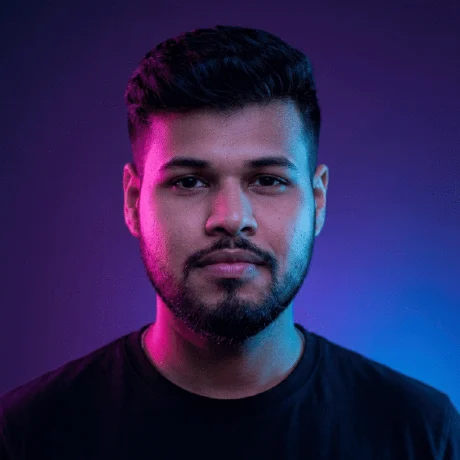
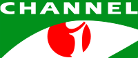

Broadcast Engineering
Transmission, encoding and live contribution for a national satellite TV network.
Broadcast Operations Engineer @ Channel i · Brand identity designer · IT & systems
Engineering the signal. Designing the brand. Solving problems.

Dhaka, Bangladesh Brand design 8 yrsI'm Abdullah Al Fahim, a Broadcast Operations Engineer from Dhaka. I keep Channel i on air, look after the systems behind it, and design brand identities. I also build small tools that make broadcast work and everyday life in Bangladesh a little easier.
Transmission, encoding and live contribution for a national satellite TV network.
System administration, networks, IT support and security practices.
Brand guidelines, logos and visual identity systems since 2018, 8 years and counting.

Bangladesh's first digital satellite television network. Transmission, encoding and live contribution, and the systems that keep it on air.
Design and software studio: brand identity, presentations, apps and tools for Bangladesh, 8 years and counting.
Electronics, communication systems and signal processing. Final year project: a gateless toll collection system for expressways using RFID tags.
I also write technical documentation, run training sessions, and plan events across students, young professionals and tech enthusiasts.
Apps, tools and resources I built for broadcast work, design and everyday life in Bangladesh.
A private, offline money manager built for Bangladesh, in Bangla and English.
Duration tape, drop-frame timecode, live countdown and rundown planner for broadcast.
A privacy-first blood donor app for Bangladesh: requests and donors on one live map.
A custom WordPress theme and content platform for a youth leader and LinkedIn creator.
A Bangla-first Android app for zakat, ushr and fitra, with Quran and hadith evidence.
PANTONE color book libraries for Adobe Illustrator 2024 and newer.
A Figma-style desktop editor for Bangla and English news photocards.
23 NI Multisim projects: op-amps, flip-flops, logic gates, diodes and AC analysis.
A private, offline task manager that rings before and at the start of every task.
GlazeWM, yasb, Windhawk and Flow Launcher configs for a focused Windows 11 workspace.
UNIV · 2021, team award
Regency Hospitality and Tourism Training Institute · 2018
Co-authored study of public reactions to the November 2025 earthquake, from 110 survey responses · 2025
Brand identity, presentations, training or a small tool your team needs. Tell me what you're working on.